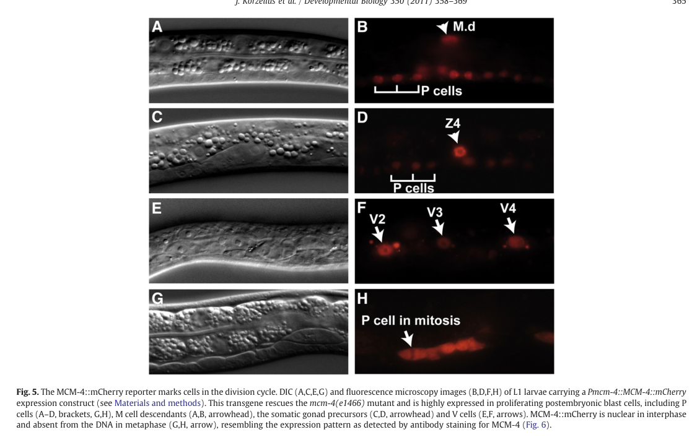

MCM-4 is the Caenorhabditis elegans ortholog of MCM4, a subunit of the heterohexameric MCM2-7 complex that functions as the core of the eukaryotic replicative DNA helicase. As part of the pre-replication complex (pre-RC), MCM2-7 is loaded onto replication origins during late mitosis and G1 to license them for replication; at the onset of S phase it is activated and, together with CDC45 and the GINS complex, forms the CMG helicase that unwinds template DNA at replication forks. The protein contains a conserved MCM AAA+ ATPase module, and the six ATPase active sites of the ring are built in trans from interfaces of neighboring subunits, so helicase and ATPase activities are properties of the assembled complex rather than any single subunit. In C. elegans, mcm-4 (also known as lin-6 and let-358) is required for postembryonic somatic DNA synthesis and for the replication checkpoint that couples mitotic entry to completion of S phase. The protein is expressed in all dividing cells during embryonic and postembryonic development and associates with chromatin in late anaphase. Loss of mcm-4 blocks DNA replication in postembryonic somatic lineages while mitosis still initiates, causing pleiotropic cell-lineage defects; expression of MCM-4 in the epidermis (hypodermis) is sufficient to rescue the associated growth retardation and lethality.
| GO Term | Evidence | Action | Reason |
|---|---|---|---|
|
GO:0042555
MCM complex
|
IBA
GO_REF:0000033 |
ACCEPT |
Summary: MCM-4 is a subunit of the heterohexameric MCM2-7 (MCM) complex. This is the defining cellular component for the protein and is strongly supported phylogenetically (the IBA is propagated across MCM2-7 orthologs from yeast to mammals) and by direct C. elegans evidence.
Reason: Core, well-established localization. MCM-4 is an integral subunit of the MCM2-7 pre-RC / replicative helicase complex, supported by orthology and by direct study in C. elegans.
Supporting Evidence:
PMID:21146520
lin-6 corresponds to mcm-4 and encodes an evolutionarily conserved component of the MCM2-7 pre-RC and replicative helicase complex.
|
|
GO:0003697
single-stranded DNA binding
|
IBA
GO_REF:0000033 |
ACCEPT |
Summary: As a subunit of the MCM2-7 replicative helicase, MCM-4 contributes to binding and translocation along single-stranded DNA during origin unwinding and fork progression. ssDNA binding is a conserved property of the MCM ring.
Reason: Conserved molecular function of MCM subunits within the helicase ring; consistent with the replicative helicase role established for C. elegans MCM-4. The activity is a property of the assembled complex, but the enables qualifier at the subunit level reflects standard MCM annotation practice.
Supporting Evidence:
PMID:21146520
encodes an evolutionarily conserved component of the MCM2-7 pre-RC and replicative helicase complex
|
|
GO:0017116
single-stranded DNA helicase activity
|
IBA
GO_REF:0000033 |
ACCEPT |
Summary: MCM-4 contributes to the ssDNA-translocating helicase activity of the MCM2-7 / CMG complex that unwinds template DNA at replication forks. The contributes_to qualifier correctly reflects that helicase activity is a property of the assembled hexamer, not the isolated subunit.
Reason: Conserved replicative helicase function, supported by orthology and by the C. elegans demonstration that MCM-4 is a component of the replicative helicase complex. The contributes_to qualifier is appropriate for a single MCM subunit.
Supporting Evidence:
PMID:31283754
is the DNA helicase complex responsible for unwinding the DNA at the origins of replication
file:worm/mcm-4/mcm-4-deep-research-falcon.md
MCM proteins carry ATP-binding motifs and are attributed ATPase and helicase activities, with ATP hydrolysis within the MCM ring driving DNA translocation and unwinding in CMG.
|
|
GO:0006271
DNA strand elongation involved in DNA replication
|
IBA
GO_REF:0000033 |
ACCEPT |
Summary: The MCM2-7/CMG helicase unwinds DNA ahead of the replication fork during elongation, and MCM-4 is required for DNA synthesis in C. elegans somatic lineages. This process annotation is consistent with the replicative helicase role.
Reason: Strand elongation requires continued fork unwinding by the MCM2-7 helicase; well supported by orthology and by the requirement of mcm-4 for postembryonic DNA synthesis.
Supporting Evidence:
PMID:21146520
C. elegans lin-6 mutants lack DNA synthesis in postembryonic somatic cell lineages, while entry into mitosis continues
|
|
GO:1902975
mitotic DNA replication initiation
|
IBA
GO_REF:0000033 |
ACCEPT |
Summary: MCM2-7 licensing of origins is the central event in initiation of mitotic (S-phase) DNA replication, and MCM-4 is required for this process. The term captures the licensing/initiation role of the complex in the mitotic cell cycle.
Reason: Replication licensing by MCM2-7 is required for initiation of mitotic DNA replication; supported by orthology and by the C. elegans replication defect on loss of mcm-4.
Supporting Evidence:
PMID:21146520
Our results support a conserved function of mcm-4 in replication licensing, DNA synthesis and the replication checkpoint
|
|
GO:0000727
double-strand break repair via break-induced replication
|
IBA
GO_REF:0000033 |
MARK AS OVER ANNOTATED |
Summary: This IBA propagates a break-induced replication (BIR) role across the MCM family. BIR uses the replicative helicase to copy DNA from a broken end, so MCM involvement is mechanistically plausible, but there is no direct C. elegans evidence that MCM-4 functions specifically in BIR, and this is a narrow, specialized repair pathway relative to the core replication role.
Reason: BIR is a specialized DNA double-strand break repair pathway; while the replicative helicase can be co-opted for BIR, this phylogenetically-propagated term over-specifies the role of MCM-4 in C. elegans, where the documented functions are bulk DNA replication and the replication checkpoint. No organism-specific evidence supports a dedicated BIR function. Retain as a recognized but non-core/over-annotated process rather than a core function.
Supporting Evidence:
PMID:21146520
Our results support a conserved function of mcm-4 in replication licensing, DNA synthesis and the replication checkpoint
|
|
GO:0003677
DNA binding
|
IEA
GO_REF:0000002 |
ACCEPT |
Summary: MCM-4 binds DNA as part of the MCM2-7 helicase ring that encircles and translocates along DNA. This InterPro2GO electronic annotation is broad but correct.
Reason: DNA binding is a general, correct parent term for the MCM helicase. The more specific single-stranded DNA binding annotation is also present; the broader IEA is acceptable.
Supporting Evidence:
PMID:31283754
MCM-4 is a component of the minichromosome maintenance complex which is responsible for licensing origins for DNA replication
|
|
GO:0003678
DNA helicase activity
|
IEA
GO_REF:0000120 |
ACCEPT |
Summary: MCM-4 is part of the MCM2-7/CMG replicative DNA helicase. This is a core molecular function, correctly captured by this electronic annotation (and mirrored by ISS and IBA annotations to the more specific ssDNA helicase term).
Reason: Correct core function for an MCM subunit; the activity is a property of the assembled complex but DNA helicase activity is the standard MF annotation for MCM proteins.
Supporting Evidence:
PMID:31283754
is the DNA helicase complex responsible for unwinding the DNA at the origins of replication
file:worm/mcm-4/mcm-4-deep-research-falcon.md
an MCM4/6/7 subcomplex exhibits intrinsic ssDNA-dependent ATP hydrolysis
|
|
GO:0005524
ATP binding
|
IEA
GO_REF:0000002 |
ACCEPT |
Summary: MCM-4 contains a conserved MCM AAA+ ATPase module (Walker A/B motifs) that binds ATP; ATP binding and hydrolysis power the MCM2-7 helicase. The UniProt record annotates EC 3.6.4.12 ATP-dependent DNA helicase activity by similarity. This electronic annotation is correct.
Reason: Direct consequence of the conserved AAA+ ATPase domain; ATP binding is a standard, well-supported molecular function for MCM subunits.
Supporting Evidence:
PMID:31283754
is the DNA helicase complex responsible for unwinding the DNA at the origins of replication
|
|
GO:0005634
nucleus
|
IEA
GO_REF:0000044 |
ACCEPT |
Summary: MCM-4 acts on nuclear chromatin during DNA replication and is detected in the nucleus / on chromatin in dividing cells. Nuclear localization is consistent with its function and is also directly supported (IDA).
Reason: Correct subcellular localization, corroborated by direct C. elegans evidence (IDA, PMID:21146520) showing chromatin/nuclear association in dividing cells.
Supporting Evidence:
PMID:21146520
The MCM-4 protein is expressed in all dividing cells during embryonic and postembryonic development and associates with chromatin in late anaphase
|
|
GO:0005694
chromosome
|
IEA
GO_REF:0000044 |
ACCEPT |
Summary: MCM-4 associates with chromatin/chromosomes as part of the pre-RC and replisome. This electronic annotation is corroborated by direct experimental evidence of chromatin association in late anaphase.
Reason: Correct localization; MCM2-7 is loaded onto origins on chromosomes and MCM-4 is observed associating with chromatin (EXP/IDA, PMID:21146520).
Supporting Evidence:
PMID:21146520
associates with chromatin in late anaphase
|
|
GO:0006260
DNA replication
|
IEA
GO_REF:0000002 |
ACCEPT |
Summary: A core biological process for MCM-4, which is required for DNA replication as a subunit of the replicative helicase. Directly supported by the C. elegans loss-of-function replication defect.
Reason: Central, well-established function; mcm-4 mutants fail postembryonic DNA synthesis.
Supporting Evidence:
PMID:21146520
lin-6 mutants lack DNA synthesis in postembryonic somatic cell lineages
|
|
GO:0006270
DNA replication initiation
|
IEA
GO_REF:0000002 |
ACCEPT |
Summary: MCM2-7 licensing/loading at origins is required for replication initiation, and MCM-4 is part of this process. Consistent with the conserved licensing role demonstrated for C. elegans mcm-4.
Reason: Correct process annotation for an MCM subunit acting in origin licensing and initiation.
Supporting Evidence:
PMID:21146520
Our results support a conserved function of mcm-4 in replication licensing, DNA synthesis and the replication checkpoint
|
|
GO:0016887
ATP hydrolysis activity
|
IEA
GO_REF:0000116 |
ACCEPT |
Summary: The MCM AAA+ module hydrolyzes ATP to drive DNA translocation/unwinding by the MCM2-7 ring. This Rhea-mapped electronic annotation is correct; ATP hydrolysis powers the replicative helicase.
Reason: Direct consequence of the conserved ATPase domain; ATP hydrolysis powers the MCM2-7/CMG helicase that unwinds origin DNA.
Supporting Evidence:
PMID:31283754
is the DNA helicase complex responsible for unwinding the DNA at the origins of replication
file:worm/mcm-4/mcm-4-deep-research-falcon.md
MCM proteins carry ATP-binding motifs and are attributed ATPase and helicase activities, with ATP hydrolysis within the MCM ring driving DNA translocation and unwinding in CMG.
|
|
GO:0042555
MCM complex
|
IEA
GO_REF:0000002 |
ACCEPT |
Summary: Electronic (InterPro2GO) annotation to the MCM complex, duplicating the well-supported IBA/NAS/ISS annotations to the same component. Correct.
Reason: Correct core localization; redundant with the experimentally and phylogenetically supported MCM complex annotations.
Supporting Evidence:
PMID:21146520
encodes an evolutionarily conserved component of the MCM2-7 pre-RC and replicative helicase complex
|
|
GO:0005694
chromosome
|
EXP
PMID:21146520 C. elegans MCM-4 is a general DNA replication and checkpoint... |
ACCEPT |
Summary: Direct experimental evidence that MCM-4 associates with chromatin (chromosomes) in dividing C. elegans cells, observed in late anaphase. This is the experimental basis for the chromosome localization.
Reason: Strong direct evidence from the primary functional paper; MCM-4 is chromatin/chromosome-associated as expected for a pre-RC subunit. The cell-cycle dynamics (chromatin-associated only at specific cell-cycle windows) are consistent with regulated MCM loading.
Supporting Evidence:
PMID:21146520
The MCM-4 protein is expressed in all dividing cells during embryonic and postembryonic development and associates with chromatin in late anaphase
file:worm/mcm-4/mcm-4-deep-research-falcon.md
MCM-4 is nuclear during interphase, becomes diffuse upon nuclear envelope breakdown and is not associated with metaphase chromatin, and then reassociates with chromatin in late anaphase
|
|
GO:0016887
ATP hydrolysis activity
|
ISS
GO_REF:0000024 |
ACCEPT |
Summary: ATP hydrolysis activity inferred from sequence/structural similarity to MCM4 orthologs bearing the conserved AAA+ ATPase module. Consistent with the Rhea-mapped IEA annotation to the same term.
Reason: Correct; the conserved MCM ATPase domain supports ATP hydrolysis as part of the helicase mechanism.
Supporting Evidence:
PMID:31283754
is the DNA helicase complex responsible for unwinding the DNA at the origins of replication
|
|
GO:0006279
premeiotic DNA replication
|
NAS
PMID:21146520 C. elegans MCM-4 is a general DNA replication and checkpoint... |
KEEP AS NON CORE |
Summary: Premeiotic (germline) DNA replication requires the MCM2-7 helicase. In mcm-4 mutants the germline retains substantial replication/division capacity from maternal/zygotic contribution, but MCM-4 is nonetheless a required replication component, including in germline lineages. This NAS annotation reflects a curator narrative statement.
Reason: The core role of MCM-4 is general (mitotic) DNA replication; premeiotic replication is one specific replication context. The paper notes the germline continues replication relatively well in zygotic mcm-4 mutants, so this is a legitimate but specialized, non-core facet rather than the defining function.
Supporting Evidence:
PMID:21146520
In contrast to somatic cells in mcm-4 mutants, the gonad continues DNA replication and cell division until late larval development
|
|
GO:0042555
MCM complex
|
NAS
PMID:21146520 C. elegans MCM-4 is a general DNA replication and checkpoint... |
ACCEPT |
Summary: Curator (NAS) statement that MCM-4 is a component of the MCM complex, drawn from the primary paper that identifies it as an MCM2-7 subunit. Duplicates the strongly supported IBA/IEA/ISS MCM complex annotations.
Reason: Correct core localization, directly stated in the cited paper.
Supporting Evidence:
PMID:21146520
encodes an evolutionarily conserved component of the MCM2-7 pre-RC and replicative helicase complex
|
|
GO:0003678
DNA helicase activity
|
ISS
GO_REF:0000024 |
ACCEPT |
Summary: DNA helicase activity inferred from sequence similarity to MCM4 orthologs, with the contributes_to qualifier correctly indicating that the activity belongs to the assembled MCM2-7 ring rather than the isolated subunit.
Reason: Correct core molecular function; the contributes_to qualifier is the appropriate framing for a single MCM subunit within the helicase.
Supporting Evidence:
PMID:31283754
is the DNA helicase complex responsible for unwinding the DNA at the origins of replication
|
|
GO:0003697
single-stranded DNA binding
|
ISS
GO_REF:0000024 |
ACCEPT |
Summary: ssDNA binding inferred from similarity to MCM4 orthologs; the MCM2-7 ring engages single-stranded DNA during unwinding. Duplicates the IBA annotation to the same term with a contributes_to qualifier.
Reason: Conserved MCM function; contributes_to appropriately reflects activity at the complex level.
Supporting Evidence:
PMID:21146520
encodes an evolutionarily conserved component of the MCM2-7 pre-RC and replicative helicase complex
|
|
GO:0042555
MCM complex
|
ISS
GO_REF:0000024 |
ACCEPT |
Summary: MCM complex membership inferred from sequence similarity to MCM4 orthologs. Duplicates the experimentally and phylogenetically supported MCM complex annotations.
Reason: Correct core localization, redundant with stronger evidence lines.
Supporting Evidence:
PMID:21146520
encodes an evolutionarily conserved component of the MCM2-7 pre-RC and replicative helicase complex
|
|
GO:0005515
protein binding
|
IPI
PMID:31283754 The demethylase NMAD-1 regulates DNA replication and repair ... |
KEEP AS NON CORE |
Summary: MCM-4 was identified in NMAD-1 immunoprecipitation/mass-spectrometry as a putative NMAD-1-binding protein and shown to bind NMAD-1 directly in vitro (recombinant His-tagged NMAD-1 pulldown of MCM-4). Notably, the authors were unable to confirm the NMAD-1/MCM-4 interaction in vivo (only the NMAD-1/TOP-2 interaction was confirmed in vivo). The direct in vitro binding supports the IPI annotation, but protein binding is an uninformative molecular function term per curation guidelines and does not, on its own, define a specific activity.
Reason: The direct NMAD-1/MCM-4 interaction is supported by in vitro recombinant binding assays, but the in vivo interaction was not confirmed, and a bare protein binding term conveys no functional specificity. Retain as supporting evidence of a physical interaction but treat as non-core; the core MF terms are the helicase/ATPase activities.
Supporting Evidence:
PMID:31283754
NMAD-1 directly bound to MTSS-1, TOP-2, and MCM-4, components of the DNA replication machinery
PMID:31283754
To test whether these candidate NMAD-1 binding proteins bound directly to NMAD-1, we performed in vitro binding assays using recombinant His-tagged NMAD-1 and GST-tagged or untagged candidate binders
|
|
GO:0007399
nervous system development
|
IMP
PMID:7262539 Isolation and genetic characterization of cell-lineage mutan... |
KEEP AS NON CORE |
Summary: This annotation derives from the classic cell-lineage mutant screen in which lin-6(e1466) (= mcm-4) was isolated. The neuronal/lineage phenotypes are a pleiotropic downstream consequence of a general postembryonic DNA-replication defect in dividing cells, not evidence of a dedicated molecular role of MCM-4 in nervous system development.
Reason: lin-6/mcm-4 mutants were recovered as postembryonic cell-lineage mutants; defective DNA replication in dividing neuroblasts secondarily disrupts nervous system development. This is non-core pleiotropy of the core replication defect. The supporting reference (PMID:7262539) is abstract-only in our cache, so the experimental IMP is retained (not removed) but reframed as non-core. Defer to the curator on the underlying assertion.
Supporting Evidence:
PMID:21146520
The lin-6(e1466) mutation was identified in the first systematic search for mutants with defects in the normally invariant postembryonic cell lineages of C. elegans
|
|
GO:0008406
gonad development
|
IMP
PMID:7262539 Isolation and genetic characterization of cell-lineage mutan... |
KEEP AS NON CORE |
Summary: Like the nervous system annotation, this reflects pleiotropic cell-lineage defects of lin-6/mcm-4 mutants rather than a dedicated gonadal developmental function. The gonad/germline actually copes relatively well with loss of zygotic mcm-4, continuing replication and division into late larval stages.
Reason: Gonad development defects are a secondary consequence of impaired postembryonic DNA replication in dividing somatic/germline precursors, not a core function of MCM-4. The IMP source (PMID:7262539) is abstract-only in our cache, so the experimental annotation is retained and reframed as non-core rather than removed.
Supporting Evidence:
PMID:21146520
the somatic gonad and germline show substantial ability to cope with lack of zygotic mcm-4 function
|
|
GO:0040011
locomotion
|
IMP
PMID:7262539 Isolation and genetic characterization of cell-lineage mutan... |
KEEP AS NON CORE |
Summary: Locomotion defects in lin-6/mcm-4 mutants are again a pleiotropic, whole-organism consequence of impaired postembryonic cell divisions (slow growth, larval arrest/lethality, defective lineages), not evidence that MCM-4 has a specific molecular role in locomotion.
Reason: Locomotion is a distal phenotype of the general replication/growth defect caused by loss of mcm-4; it does not represent a core molecular or cellular function. The IMP source (PMID:7262539) is abstract-only in our cache, so the annotation is retained and marked non-core rather than removed.
Supporting Evidence:
PMID:21146520
These mutants grow slowly and either die during larval development or develop into sterile adults
|
|
GO:0005634
nucleus
|
IDA
PMID:21146520 C. elegans MCM-4 is a general DNA replication and checkpoint... |
ACCEPT |
Summary: Direct experimental evidence localizes MCM-4 to the nucleus / nuclear chromatin in dividing C. elegans cells. This is the experimental basis for the nuclear localization (consistent with the electronic GO:0005634 annotation).
Reason: Strong direct evidence; nuclear/chromatin localization is expected and observed for a pre-RC subunit. MCM-4 is nuclear during interphase with a large soluble pool, consistent with regulated licensing.
Supporting Evidence:
PMID:21146520
The MCM-4 protein is expressed in all dividing cells during embryonic and postembryonic development and associates with chromatin in late anaphase
file:worm/mcm-4/mcm-4-deep-research-falcon.md
MCM-4 is nuclear during interphase, becomes diffuse upon nuclear envelope breakdown and is not associated with metaphase chromatin, and then reassociates with chromatin in late anaphase
|
Q: Does the apparent tolerance of the C. elegans germline and somatic gonad to loss of zygotic mcm-4 reflect maternal MCM-4 contribution, or a genuinely lower requirement for MCM-4 in those lineages?
Q: What is the functional significance of the physical interaction between MCM-4 and the DNA demethylase NMAD-1 (and TOP-2) for replication or repair in the germline?
Q: Why is epidermal (hypodermal) expression of MCM-4 specifically sufficient to rescue organismal growth and viability, given that MCM-4 is expressed in all dividing cells?
Q: Does MCM-4, as an obligate subunit of the CMG helicase, contribute to the proposed replication-independent / chromatin-handling role of CMG in asymmetric cell-fate divergence (reported for the GINS subunit PSF-2), or is that function genetically separable from MCM-4?
Experiment: Reconstitute or affinity-purify the C. elegans MCM2-7 / CMG complex and measure ATP-dependent single-stranded DNA helicase and ATPase activity to directly confirm MCM-4 incorporation and biochemical function.
Hypothesis: C. elegans MCM-4 assembles into a functional MCM2-7/CMG complex with ATP-dependent DNA helicase activity, as predicted from orthology.
Experiment: Use tissue-specific degron/auxin-inducible depletion of MCM-4 (germline vs. hypodermis vs. neurons) to dissect lineage-specific replication requirements and separate the primary replication defect from downstream developmental phenotypes.
Hypothesis: The developmental (nervous system, gonad, locomotion) phenotypes are secondary to loss of DNA replication in dividing precursors rather than a tissue-specific molecular function of MCM-4.
Experiment: Map the MCM-4/NMAD-1 interaction interface and test whether NMAD-1 demethylase activity modulates MCM-4 chromatin loading or replication/repair in the germline.
Hypothesis: NMAD-1 regulates MCM-4-dependent replication/repair in the germline through a direct physical interaction.
The research report should be a detailed narrative explaining the function, biological processes, and localization of the gene product. Citations should be given for all claims.
You should prioritize authoritative reviews and primary scientific literature when conducting research. You can supplement
this with annotations you find in gene/protein databases, but these can be outdated or inaccurate.
We are specifically interested in the primary function of the gene - for enzymes, what reaction is catalyzed, and what is the substrate specificity? For transporters, what is the substrate? For structural proteins or adapters, what is the broader structural role? For signaling molecules, what is the role in the pathway.
We are interested in where in or outside the cell the gene product carries out its function.
We are also interested in the signaling or biochemical pathways in which the gene functions. We are less interested in broad pleiotropic effects, except where these elucidate the precise role.
Include evidence where possible. We are interested in both experimental evidence as well as inference from structure, evolution, or bioinformatic analysis. Precise studies should be prioritized over high-throughput, where available.
The C. elegans gene mcm-4 (historically lin-6; UniProt lists additional synonyms including let-358) encodes the MCM4 subunit of the conserved MCM2–7 replicative helicase/replication-licensing machinery, a core component required to license DNA replication origins and (after activation as CMG) unwind DNA during S phase. In worms, loss of mcm-4 uncouples cell-cycle progression from DNA synthesis (mitosis can proceed despite failed replication), reveals roles in replication checkpoint signaling, and shows strong tissue-specific requirements—particularly in the epidermis for organismal growth and viability. Recent 2023–2024 structural and mechanistic work across eukaryotes has clarified how loaded MCM double hexamers are activated into CMG to melt/unwind origins, and 2024 C. elegans genetics provides evidence that the CMG complex can also influence cell-fate divergence via chromatin/histone-inheritance mechanisms, highlighting potential noncanonical functions of MCM-containing assemblies.
Primary C. elegans genetics explicitly establishes that the historical locus lin-6 corresponds to mcm-4 and encodes the single C. elegans MCM-4 subunit of the MCM2–7 replicative helicase, within the replication pre-initiation/licensing machinery. (korzelius2011c.elegansmcm4 pages 4-5, korzelius2011c.elegansmcm4 pages 9-9, korzelius2011c.elegansmcm4 pages 1-2)
Important scope note. The retrieved primary literature directly supports the mcm-4 ↔ lin-6 ↔ MCM4-ortholog mapping in C. elegans, but it does not explicitly mention the UniProt accession Q95XQ8 or the synonym let-358 in the excerpted sections available here; those identifiers are therefore treated as database-provided context rather than paper-verified in this report. (korzelius2011c.elegansmcm4 pages 2-3, korzelius2011c.elegansmcm4 pages 4-5)
MCM-4 is not typically a standalone enzyme; rather, it contributes as one subunit to the enzymatic activities of the MCM2–7/CMG helicase. MCM proteins carry ATP-binding motifs and are attributed ATPase and helicase activities, with ATP hydrolysis within the MCM ring driving DNA translocation and unwinding in CMG. (you2024assemblyactivationand pages 2-4, xiang2023thecmghelicase pages 4-6)
A widely used biochemical dissection highlights that an MCM4/6/7 subcomplex exhibits intrinsic ssDNA-dependent ATP hydrolysis and 3′→5′ helicase activity, with preferences for forked/bubble DNA structures and certain ssDNA contexts (e.g., T-rich ssDNA activating activity). This informs substrate and polarity expectations for MCM4-containing helicase action in vivo. (you2024assemblyactivationand pages 2-4)
At the replication fork, the activated CMG helicase translocates 3′→5′ on the leading-strand ssDNA template while unwinding parental duplex DNA, thereby providing ssDNA templates for polymerases. (xiang2023thecmghelicase pages 4-6, xu2023synergismbetweencmg pages 1-2)
In vivo, the full MCM2–7 heterohexamer is required for replication licensing and for initiation/elongation; activation into CMG occurs via kinase-driven recruitment of firing factors and accessory proteins. (you2024assemblyactivationand pages 1-2, you2024assemblyactivationand pages 4-6)
In C. elegans, mcm-4/lin-6 is required for DNA synthesis in multiple somatic lineages; mutants can enter the G1/S transition but fail to replicate DNA in most postembryonic lineages. (korzelius2011c.elegansmcm4 pages 4-5, korzelius2011c.elegansmcm4 pages 1-2)
The cell-cycle timing and localization of MCM-4 support a licensing role: MCM-4 associates with chromatin in late anaphase (a conserved licensing window at mitotic exit) and is strongly induced around S-phase onset in cycling lineages. (korzelius2011c.elegansmcm4 pages 9-11, korzelius2011c.elegansmcm4 pages 9-9)
Worm experiments support that MCM-4 contributes to replication checkpoint responses: embryos depleted of MCM components can show absence of DNA replication with continued mitotic DNA segregation and genome fragmentation, consistent with defective coupling between replication completion and mitotic entry. (korzelius2011c.elegansmcm4 pages 5-7)
Moreover, MCM-4 perturbation can reduce a replication-stress-induced delay of mitotic progression (e.g., in contexts of nucleotide depletion), consistent with MCM-dependent generation of ssDNA at stalled forks that enables checkpoint signaling (ATR/CHK-1 pathway logic discussed in the worm study). (korzelius2011c.elegansmcm4 pages 5-7, korzelius2011c.elegansmcm4 pages 9-11)
Despite being a core replication factor, mcm-4 shows a striking tissue-specific requirement for animal growth and viability. Epidermal expression of MCM-4 (Pdpy-7-driven) restores larval growth and viability in mcm-4 mutants, whereas intestine-specific expression rescues intestinal nuclear divisions/endoreduplication but not organismal viability. (korzelius2011c.elegansmcm4 pages 9-9, korzelius2011c.elegansmcm4 pages 9-11)
MCM-4 acts in the nucleus/chromatin compartment consistent with its licensing/helicase roles. In C. elegans, MCM-4 is nuclear during interphase, becomes diffuse upon nuclear envelope breakdown and is not associated with metaphase chromatin, and then reassociates with chromatin in late anaphase, consistent with re-licensing at mitotic exit. (korzelius2011c.elegansmcm4 pages 9-9, ruijtenberg2011regulationofdna pages 3-6, korzelius2011c.elegansmcm4 pages 5-7)
Live-embryo imaging of other MCM2–7 subunits (e.g., GFP–MCM-2/3) demonstrates that chromatin association during late M phase depends on pre-RC factors (CDC-6, CDT-1, ORC) and that nuclear accumulation can include a large soluble pool during interphase. This supports the conserved model that MCM chromatin loading is temporally regulated and tightly controlled to prevent rereplication. (sonneville2012thedynamicsof pages 2-4, sonneville2012thedynamicsof pages 1-2)
Visual support. Key images from Korzelius et al. (2011) show MCM-4 localization dynamics (Figures 5–6) and epidermal rescue (Figure 7). (korzelius2011c.elegansmcm4 media d50caf5d, korzelius2011c.elegansmcm4 media a6161eb6, korzelius2011c.elegansmcm4 media 9b7439f9)
A 2024 cryo-EM reconstitution study visualized staged origin unwinding: firing factors assemble on the MCM double hexamer to nucleate DNA melting, with quantifiable initial distortion (reported as ~0.7 turns untwisted and ≥3 bp broken in early intermediates), and Mcm10 then triggers splitting into two helicases and lagging-strand ejection to form productive forks. (henrikus2024unwindingofa pages 1-2)
A 2024 review synthesizes biochemical and structural data supporting steric-exclusion unwinding, highlighting kinase regulation (DDK/CDK) and stepwise recruitment of Cdc45/GINS to form active CMG. (you2024assemblyactivationand pages 1-2, you2024assemblyactivationand pages 6-7)
A 2023 Nature Communications structural study further emphasizes ordered kinase-dependent assembly and the coupling between CMG and leading-strand polymerase Polε, describing ATPase-site rearrangements and dynamic polymerase engagement that coordinates unwinding and synthesis. (xu2023synergismbetweencmg pages 1-2)
A 2024 C. elegans Nature Communications study reports that the CMG helicase complex (studying GINS subunit PSF-2) is required for divergence of daughter fates during asymmetric divisions, including transcriptional upregulation of the pro-apoptotic gene egl-1. The authors propose a mechanism separable from DNA unwinding, implicating replication-coupled chromatin/histone-handling activities (histone chaperone-like effects) that produce epigenetic changes at the egl-1 locus during mother-cell replication. Quantitative results include: the worm soma produces 1090 somatic cells with 131 deaths, apoptosis occurs ~20–30 min after terminal division, and psf-2 perturbation blocks specific programmed deaths (e.g., 67% of MSpaapp deaths blocked) and disrupts egl-1 mRNA asymmetry measured by single-molecule RNA FISH. (memar2024thereplicativehelicase pages 1-2, memar2024thereplicativehelicase pages 8-9)
Although this is not mcm-4-specific, it is highly relevant context because MCM-4 is an obligate CMG core subunit; thus the study motivates careful consideration of potential beyond-replication roles for CMG/MCM assemblies in worm development. (memar2024thereplicativehelicase pages 1-2, memar2024thereplicativehelicase pages 10-11)
A 2024 Molecular Cancer Therapeutics study identified ATP-competitive inhibitors of human CMG/MCM ATPase/helicase activity (amino-coumarins clorobiocin and coumermycin-A1) that disrupt ATP-dependent CMG assembly steps (e.g., MCM ring assembly and GINS recruitment) and destabilize replisome components, inducing DNA damage and selective toxicity in K-Ras mutant tumor cells. This is a concrete example of “real-world implementation” of mechanistic MCM research in drug discovery. (xiang2024identificationofatpcompetitive pages 1-2)
Worm studies have implemented MCM-4::mCherry reporters (including MosSCI single-copy rescue constructs) to visualize cell-cycle regulated localization and to validate functional rescue of mcm-4 null mutants. (ruijtenberg2011regulationofdna pages 1-3, ruijtenberg2011regulationofdna pages 3-6)
A 2017 PLoS ONE paper developed a live reporter for cell-cycle entry that combines the mcm-4 promoter (as a readout of Rb/E2F-mediated transcriptional control) with a CDK-activity sensor to mark cell-cycle commitment in seam cells—illustrating practical use of mcm-4 regulatory sequences as a proliferation/cell-cycle marker. (xiang2024identificationofatpcompetitive pages 1-2)
Worm replication studies use EdU/BrdU incorporation, DNA-content quantification by confocal serial sections, and flow cytometry of dissociated cells with GFP gating to analyze replication and cell-cycle states in specific tissues. (ruijtenberg2011regulationofdna pages 3-6)
The C. elegans mcm-4 literature indicates a general replication/helicase role but a particularly strong epidermal requirement for growth/viability (rescuable by epidermal expression). A plausible expert interpretation (consistent with licensing theory) is that tissues differ in replication demand, tolerance to replication stress, reliance on dormant origins, and checkpoint robustness; in such a model, an epidermal lineage could be more sensitive to reduced licensing/helicase capacity. This interpretation aligns with the broader licensing framework where excess loaded MCM supports dormant origins under stress and replication completion. (korzelius2011c.elegansmcm4 pages 9-9, korzelius2011c.elegansmcm4 pages 9-11, you2024assemblyactivationand pages 1-2)
The 2024 finding that CMG (via GINS subunit PSF-2) can influence fate divergence through a mechanism proposed to be independent of unwinding suggests that MCM-containing replisome components may contribute to chromatin-state inheritance and gene-expression competence. For mcm-4 annotation, the strongest evidence remains canonical licensing/helicase roles, but functional annotation should remain open to CMG-dependent chromatin regulation in specific developmental contexts. (memar2024thereplicativehelicase pages 1-2, memar2024thereplicativehelicase pages 10-11, memar2024thereplicativehelicase pages 8-9)
The following table consolidates the main findings, explicitly separating worm primary evidence from cross-species mechanistic inference and listing quantitative datapoints.
| Topic | Key findings | Evidence type (worm primary vs cross-species review/structural) | Best supporting sources (authors, year, URL) | Citation IDs to use |
|---|---|---|---|---|
| Identity / synonyms | The target is Caenorhabditis elegans mcm-4, historically identified as lin-6; primary worm literature states that lin-6 corresponds to mcm-4 and encodes the single C. elegans MCM-4 subunit of the MCM2-7 replicative helicase / replication licensing machinery. UniProt-provided synonyms also include let-358; this synonym was not explicitly recovered in the retrieved papers, so it should be treated as database-supported rather than paper-verified here. | Worm primary + database-context alignment | Korzelius et al., 2011, https://doi.org/10.1016/j.ydbio.2010.12.009; Ruijtenberg et al., 2011, https://doi.org/10.5772/19397 | (korzelius2011c.elegansmcm4 pages 2-3, korzelius2011c.elegansmcm4 pages 4-5, korzelius2011c.elegansmcm4 pages 9-9, ruijtenberg2011regulationofdna pages 3-6) |
| Molecular function | MCM-4 functions as one subunit of the AAA+ ATPase MCM2-7 heterohexamer, the core of the eukaryotic replicative helicase. In active form, CMG (Cdc45-MCM2-7-GINS) uses ATP hydrolysis to unwind parental duplex DNA by steric exclusion while translocating 3'→5' on the leading-strand ssDNA. Substrate context: dsDNA at licensed origins is converted to ssDNA templates for replication forks; MCM4 contributes to this complex activity rather than acting as a known standalone enzyme in worms. | Cross-species review/structural, used to infer precise biochemistry for worm ortholog | You & Masai, 2024, https://doi.org/10.3390/biology13080629; Xu et al., 2023, https://doi.org/10.1038/s41467-023-41506-0; Xiang et al., 2023, https://doi.org/10.1038/s41388-022-02572-8 | (you2024assemblyactivationand pages 2-4, you2024assemblyactivationand pages 1-2, you2024assemblyactivationand pages 4-6, xiang2023thecmghelicase pages 4-6, xu2023synergismbetweencmg pages 1-2) |
| Biological processes / pathways | Core role in replication licensing, origin firing, S-phase progression, and the replication checkpoint. In worms, mcm-4 is required for productive DNA synthesis and contributes to checkpoint-dependent delay of mitosis under replication stress; it acts in the conserved pathway with ORC, CDC-6, CDT-1, and downstream CMG assembly/activation factors. | Worm primary with mechanistic support from reviews | Korzelius et al., 2011, https://doi.org/10.1016/j.ydbio.2010.12.009; Sonneville et al., 2012, https://doi.org/10.1083/jcb.201110080; Gaggioli et al., 2014, https://doi.org/10.1083/jcb.201310083; You & Masai, 2024, https://doi.org/10.3390/biology13080629 | (korzelius2011c.elegansmcm4 pages 5-7, korzelius2011c.elegansmcm4 pages 9-11, ruijtenberg2011regulationofdna pages 3-6, sonneville2012thedynamicsof pages 2-4, sonneville2012thedynamicsof pages 1-2, sonneville2012thedynamicsof pages 4-6) |
| Localization / dynamics | In C. elegans, MCM-4 is nuclear during interphase, diffuse / not chromosome-associated in metaphase, and re-associates with chromatin in late anaphase, matching licensing at mitotic exit. Related worm imaging of MCM2-7 shows loading in late M / early G1, with a large soluble nuclear pool in interphase and pre-RC dependence on cdc-6/cdt-1/orc-5. | Worm primary | Korzelius et al., 2011, https://doi.org/10.1016/j.ydbio.2010.12.009; Sonneville et al., 2012, https://doi.org/10.1083/jcb.201110080; Sonneville et al., 2015, https://doi.org/10.1016/j.celrep.2015.06.046 | (sonneville2012thedynamicsof pages 2-4, korzelius2011c.elegansmcm4 pages 9-9, ruijtenberg2011regulationofdna pages 3-6, korzelius2011c.elegansmcm4 pages 5-7, sonneville2015bothchromosomedecondensation pages 1-3, korzelius2011c.elegansmcm4 pages 1-2) |
| Key phenotypes | Loss of mcm-4 causes failure of DNA replication with continued mitotic chromosome segregation, genome fragmentation, and defective checkpoint responses. Postembryonic somatic lineages are strongly affected, while gonad/germline can continue divisions longer, likely due to maternal product and stronger checkpoint buffering. | Worm primary | Korzelius et al., 2011, https://doi.org/10.1016/j.ydbio.2010.12.009 | (korzelius2011c.elegansmcm4 pages 5-7, korzelius2011c.elegansmcm4 pages 7-9, korzelius2011c.elegansmcm4 pages 4-5, korzelius2011c.elegansmcm4 pages 1-2) |
| Tissue-specific requirements | Although mcm-4 has a general replication role, worm experiments show an epidermis-specific requirement for organismal growth and viability. Pdpy-7::MCM-4::mCherry rescues larval growth and viability, while intestine-specific expression rescues intestinal nuclear divisions/endoreduplication but not whole-animal viability. This indicates strong tissue-specific sensitivity despite conserved core function. | Worm primary | Korzelius et al., 2011, https://doi.org/10.1016/j.ydbio.2010.12.009 | (korzelius2011c.elegansmcm4 pages 9-9, korzelius2011c.elegansmcm4 pages 9-11) |
| Replication-independent / beyond-replication roles | Recent C. elegans work on CMG, though centered on PSF-2/GINS2 rather than mcm-4 directly, shows that the replicative helicase can influence asymmetric cell-fate divergence and egl-1 transcription through a proposed histone-chaperone / chromatin inheritance mechanism that is separable from bulk DNA unwinding. This is relevant for interpreting potential noncanonical roles of MCM4-containing CMG in worms. | Worm primary (complex-level inference, not mcm-4-specific) | Memar et al., 2024, https://doi.org/10.1038/s41467-024-53715-2; Rankin & Rankin, 2024, https://doi.org/10.3390/biology13040258 | (memar2024thereplicativehelicase pages 1-2, memar2024thereplicativehelicase pages 11-12, memar2024thereplicativehelicase pages 10-11, memar2024thereplicativehelicase pages 9-10, memar2024thereplicativehelicase pages 8-9) |
| Recent structural/mechanistic developments (2023-2024) | 2023-2024 studies sharpen the mechanism of MCM activation: loaded double hexamers are converted into active CMG by DDK/CDK-dependent phosphorylation, recruitment of Cdc45/GINS/Polε, and Mcm10-triggered helicase splitting/origin melting. Cryo-EM visualized local origin unwinding, including ~0.7 turns untwisted and ≥3 bp broken in early activation intermediates. | Cross-species primary structural + review | Henrikus et al., 2024, https://doi.org/10.1038/s41594-024-01280-z; You & Masai, 2024, https://doi.org/10.3390/biology13080629; Weissmann et al., 2024, https://doi.org/10.1038/s41586-024-08263-6 | (you2024assemblyactivationand pages 1-2, henrikus2024unwindingofa pages 1-2, you2024assemblyactivationand pages 6-7) |
| Applications / real-world implementations | In worms, MCM-4 promoter/reporters are used as practical cell-cycle entry and proliferation markers; live MCM-4::mCherry supports lineage-level imaging of licensing dynamics. More broadly, the CMG/MCM ATPase has become a tractable intervention point: 2024 work identified ATP-competitive CMG/MCM inhibitors (e.g., clorobiocin, coumermycin-A1) that disrupt helicase assembly and fork function, illustrating translational relevance of the MCM4-containing complex. | Worm tool + cross-species therapeutic application | van Rijnberk et al., 2017, https://doi.org/10.1371/journal.pone.0171600; Ruijtenberg et al., 2011, https://doi.org/10.5772/19397; Xiang et al., 2024, https://doi.org/10.1158/1535-7163.mct-23-0904 | (ruijtenberg2011regulationofdna pages 3-6, xiang2024identificationofatpcompetitive pages 1-2) |
| Key quantitative / statistical data points | MCM-4 protein predicted at 823 aa in C. elegans. In structural activation intermediates, origin DNA is untwisted by ~0.7 turns with at least 3 bp broken. In the 2024 CMG fate-divergence study, the C. elegans soma produces 1090 somatic cells, 131 die, and apoptosis occurs ~20–30 min after terminal division; in psf-2(t3443ts), 67% of MSpaapp deaths were blocked and AMso fate defects reached 82% (167/204) among divisions scored. | Mixed: worm primary + cross-species structural + worm primary beyond-replication | Korzelius et al., 2011, https://doi.org/10.1016/j.ydbio.2010.12.009; Henrikus et al., 2024, https://doi.org/10.1038/s41594-024-01280-z; Memar et al., 2024, https://doi.org/10.1038/s41467-024-53715-2 | (korzelius2011c.elegansmcm4 pages 2-3, henrikus2024unwindingofa pages 1-2, memar2024thereplicativehelicase pages 1-2, memar2024thereplicativehelicase pages 9-10, memar2024thereplicativehelicase pages 8-9) |
Table: This table condenses the most relevant identity, function, localization, phenotype, and recent mechanistic findings for C. elegans mcm-4/lin-6. It separates direct worm evidence from cross-species mechanistic inference and provides citation IDs for efficient reuse in the final report.
References
(korzelius2011c.elegansmcm4 pages 4-5): Jerome Korzelius, Inge The, Suzan Ruijtenberg, Vincent Portegijs, Huihong Xu, H. Robert Horvitz, and Sander van den Heuvel. C. elegans mcm-4 is a general dna replication and checkpoint component with an epidermis-specific requirement for growth and viability. Developmental Biology, 350:358-369, Feb 2011. URL: https://doi.org/10.1016/j.ydbio.2010.12.009, doi:10.1016/j.ydbio.2010.12.009. This article has 32 citations and is from a peer-reviewed journal.
(korzelius2011c.elegansmcm4 pages 9-9): Jerome Korzelius, Inge The, Suzan Ruijtenberg, Vincent Portegijs, Huihong Xu, H. Robert Horvitz, and Sander van den Heuvel. C. elegans mcm-4 is a general dna replication and checkpoint component with an epidermis-specific requirement for growth and viability. Developmental Biology, 350:358-369, Feb 2011. URL: https://doi.org/10.1016/j.ydbio.2010.12.009, doi:10.1016/j.ydbio.2010.12.009. This article has 32 citations and is from a peer-reviewed journal.
(korzelius2011c.elegansmcm4 pages 1-2): Jerome Korzelius, Inge The, Suzan Ruijtenberg, Vincent Portegijs, Huihong Xu, H. Robert Horvitz, and Sander van den Heuvel. C. elegans mcm-4 is a general dna replication and checkpoint component with an epidermis-specific requirement for growth and viability. Developmental Biology, 350:358-369, Feb 2011. URL: https://doi.org/10.1016/j.ydbio.2010.12.009, doi:10.1016/j.ydbio.2010.12.009. This article has 32 citations and is from a peer-reviewed journal.
(korzelius2011c.elegansmcm4 pages 2-3): Jerome Korzelius, Inge The, Suzan Ruijtenberg, Vincent Portegijs, Huihong Xu, H. Robert Horvitz, and Sander van den Heuvel. C. elegans mcm-4 is a general dna replication and checkpoint component with an epidermis-specific requirement for growth and viability. Developmental Biology, 350:358-369, Feb 2011. URL: https://doi.org/10.1016/j.ydbio.2010.12.009, doi:10.1016/j.ydbio.2010.12.009. This article has 32 citations and is from a peer-reviewed journal.
(you2024assemblyactivationand pages 1-2): Zhiying You and Hisao Masai. Assembly, activation, and helicase actions of mcm2-7: transition from inactive mcm2-7 double hexamers to active replication forks. Biology, 13:629, Aug 2024. URL: https://doi.org/10.3390/biology13080629, doi:10.3390/biology13080629. This article has 9 citations.
(you2024assemblyactivationand pages 4-6): Zhiying You and Hisao Masai. Assembly, activation, and helicase actions of mcm2-7: transition from inactive mcm2-7 double hexamers to active replication forks. Biology, 13:629, Aug 2024. URL: https://doi.org/10.3390/biology13080629, doi:10.3390/biology13080629. This article has 9 citations.
(henrikus2024unwindingofa pages 1-2): Sarah S. Henrikus, Marta H. Gross, Oliver Willhoft, Thomas Pühringer, Jacob S. Lewis, Allison W. McClure, Julia F. Greiwe, Giacomo Palm, Andrea Nans, John F. X. Diffley, and Alessandro Costa. Unwinding of a eukaryotic origin of replication visualized by cryo-em. Nature Structural & Molecular Biology, 31:1265-1276, May 2024. URL: https://doi.org/10.1038/s41594-024-01280-z, doi:10.1038/s41594-024-01280-z. This article has 32 citations and is from a highest quality peer-reviewed journal.
(xiang2023thecmghelicase pages 4-6): Shengyan Xiang, Damon R. Reed, and Mark G. Alexandrow. The cmg helicase and cancer: a tumor “engine” and weakness with missing mutations. Oncogene, 42:473-490, Dec 2023. URL: https://doi.org/10.1038/s41388-022-02572-8, doi:10.1038/s41388-022-02572-8. This article has 31 citations and is from a domain leading peer-reviewed journal.
(you2024assemblyactivationand pages 2-4): Zhiying You and Hisao Masai. Assembly, activation, and helicase actions of mcm2-7: transition from inactive mcm2-7 double hexamers to active replication forks. Biology, 13:629, Aug 2024. URL: https://doi.org/10.3390/biology13080629, doi:10.3390/biology13080629. This article has 9 citations.
(xu2023synergismbetweencmg pages 1-2): Zhichun Xu, Jianrong Feng, Daqi Yu, Yunjing Huo, Xiaohui Ma, Wai Hei Lam, Zheng Liu, Xiang David Li, Toyotaka Ishibashi, Shangyu Dang, and Yuanliang Zhai. Synergism between cmg helicase and leading strand dna polymerase at replication fork. Nature Communications, Sep 2023. URL: https://doi.org/10.1038/s41467-023-41506-0, doi:10.1038/s41467-023-41506-0. This article has 34 citations and is from a highest quality peer-reviewed journal.
(korzelius2011c.elegansmcm4 pages 9-11): Jerome Korzelius, Inge The, Suzan Ruijtenberg, Vincent Portegijs, Huihong Xu, H. Robert Horvitz, and Sander van den Heuvel. C. elegans mcm-4 is a general dna replication and checkpoint component with an epidermis-specific requirement for growth and viability. Developmental Biology, 350:358-369, Feb 2011. URL: https://doi.org/10.1016/j.ydbio.2010.12.009, doi:10.1016/j.ydbio.2010.12.009. This article has 32 citations and is from a peer-reviewed journal.
(korzelius2011c.elegansmcm4 pages 5-7): Jerome Korzelius, Inge The, Suzan Ruijtenberg, Vincent Portegijs, Huihong Xu, H. Robert Horvitz, and Sander van den Heuvel. C. elegans mcm-4 is a general dna replication and checkpoint component with an epidermis-specific requirement for growth and viability. Developmental Biology, 350:358-369, Feb 2011. URL: https://doi.org/10.1016/j.ydbio.2010.12.009, doi:10.1016/j.ydbio.2010.12.009. This article has 32 citations and is from a peer-reviewed journal.
(ruijtenberg2011regulationofdna pages 3-6): Suzan Ruijtenberg, Sander van den Heuvel, and Inge The. Regulation of dna synthesis and replication checkpoint activation during c. elegans development. ArXiv, Sep 2011. URL: https://doi.org/10.5772/19397, doi:10.5772/19397. This article has 1 citations.
(sonneville2012thedynamicsof pages 2-4): Remi Sonneville, Matthieu Querenet, Ashley Craig, Anton Gartner, and J. Julian Blow. The dynamics of replication licensing in live caenorhabditis elegans embryos. The Journal of Cell Biology, 196:233-246, Jan 2012. URL: https://doi.org/10.1083/jcb.201110080, doi:10.1083/jcb.201110080. This article has 88 citations.
(sonneville2012thedynamicsof pages 1-2): Remi Sonneville, Matthieu Querenet, Ashley Craig, Anton Gartner, and J. Julian Blow. The dynamics of replication licensing in live caenorhabditis elegans embryos. The Journal of Cell Biology, 196:233-246, Jan 2012. URL: https://doi.org/10.1083/jcb.201110080, doi:10.1083/jcb.201110080. This article has 88 citations.
(korzelius2011c.elegansmcm4 media d50caf5d): Jerome Korzelius, Inge The, Suzan Ruijtenberg, Vincent Portegijs, Huihong Xu, H. Robert Horvitz, and Sander van den Heuvel. C. elegans mcm-4 is a general dna replication and checkpoint component with an epidermis-specific requirement for growth and viability. Developmental Biology, 350:358-369, Feb 2011. URL: https://doi.org/10.1016/j.ydbio.2010.12.009, doi:10.1016/j.ydbio.2010.12.009. This article has 32 citations and is from a peer-reviewed journal.
(korzelius2011c.elegansmcm4 media a6161eb6): Jerome Korzelius, Inge The, Suzan Ruijtenberg, Vincent Portegijs, Huihong Xu, H. Robert Horvitz, and Sander van den Heuvel. C. elegans mcm-4 is a general dna replication and checkpoint component with an epidermis-specific requirement for growth and viability. Developmental Biology, 350:358-369, Feb 2011. URL: https://doi.org/10.1016/j.ydbio.2010.12.009, doi:10.1016/j.ydbio.2010.12.009. This article has 32 citations and is from a peer-reviewed journal.
(korzelius2011c.elegansmcm4 media 9b7439f9): Jerome Korzelius, Inge The, Suzan Ruijtenberg, Vincent Portegijs, Huihong Xu, H. Robert Horvitz, and Sander van den Heuvel. C. elegans mcm-4 is a general dna replication and checkpoint component with an epidermis-specific requirement for growth and viability. Developmental Biology, 350:358-369, Feb 2011. URL: https://doi.org/10.1016/j.ydbio.2010.12.009, doi:10.1016/j.ydbio.2010.12.009. This article has 32 citations and is from a peer-reviewed journal.
(you2024assemblyactivationand pages 6-7): Zhiying You and Hisao Masai. Assembly, activation, and helicase actions of mcm2-7: transition from inactive mcm2-7 double hexamers to active replication forks. Biology, 13:629, Aug 2024. URL: https://doi.org/10.3390/biology13080629, doi:10.3390/biology13080629. This article has 9 citations.
(memar2024thereplicativehelicase pages 1-2): Nadin Memar, Ryan Sherrard, Aditya Sethi, Carla Lloret Fernandez, Henning Schmidt, Eric J. Lambie, Richard J. Poole, Ralf Schnabel, and Barbara Conradt. The replicative helicase cmg is required for the divergence of cell fates during asymmetric cell division in vivo. Nature Communications, Oct 2024. URL: https://doi.org/10.1038/s41467-024-53715-2, doi:10.1038/s41467-024-53715-2. This article has 7 citations and is from a highest quality peer-reviewed journal.
(memar2024thereplicativehelicase pages 8-9): Nadin Memar, Ryan Sherrard, Aditya Sethi, Carla Lloret Fernandez, Henning Schmidt, Eric J. Lambie, Richard J. Poole, Ralf Schnabel, and Barbara Conradt. The replicative helicase cmg is required for the divergence of cell fates during asymmetric cell division in vivo. Nature Communications, Oct 2024. URL: https://doi.org/10.1038/s41467-024-53715-2, doi:10.1038/s41467-024-53715-2. This article has 7 citations and is from a highest quality peer-reviewed journal.
(memar2024thereplicativehelicase pages 10-11): Nadin Memar, Ryan Sherrard, Aditya Sethi, Carla Lloret Fernandez, Henning Schmidt, Eric J. Lambie, Richard J. Poole, Ralf Schnabel, and Barbara Conradt. The replicative helicase cmg is required for the divergence of cell fates during asymmetric cell division in vivo. Nature Communications, Oct 2024. URL: https://doi.org/10.1038/s41467-024-53715-2, doi:10.1038/s41467-024-53715-2. This article has 7 citations and is from a highest quality peer-reviewed journal.
(xiang2024identificationofatpcompetitive pages 1-2): Shengyan Xiang, Kendall C. Craig, Xingju Luo, Darcy L. Welch, Renan B. Ferreira, Harshani R. Lawrence, Nicholas J. Lawrence, Damon R. Reed, and Mark G. Alexandrow. Identification of atp-competitive human cmg helicase inhibitors for cancer intervention that disrupt cmg-replisome function. Molecular Cancer Therapeutics, 23:1568-1585, Jul 2024. URL: https://doi.org/10.1158/1535-7163.mct-23-0904, doi:10.1158/1535-7163.mct-23-0904. This article has 8 citations and is from a peer-reviewed journal.
(ruijtenberg2011regulationofdna pages 1-3): Suzan Ruijtenberg, Sander van den Heuvel, and Inge The. Regulation of dna synthesis and replication checkpoint activation during c. elegans development. ArXiv, Sep 2011. URL: https://doi.org/10.5772/19397, doi:10.5772/19397. This article has 1 citations.
(sonneville2012thedynamicsof pages 4-6): Remi Sonneville, Matthieu Querenet, Ashley Craig, Anton Gartner, and J. Julian Blow. The dynamics of replication licensing in live caenorhabditis elegans embryos. The Journal of Cell Biology, 196:233-246, Jan 2012. URL: https://doi.org/10.1083/jcb.201110080, doi:10.1083/jcb.201110080. This article has 88 citations.
(sonneville2015bothchromosomedecondensation pages 1-3): Remi Sonneville, Gillian Craig, Karim Labib, Anton Gartner, and J. Julian Blow. Both chromosome decondensation and condensation are dependent on dna replication in c. elegans embryos. Cell Reports, 12:405-417, Jul 2015. URL: https://doi.org/10.1016/j.celrep.2015.06.046, doi:10.1016/j.celrep.2015.06.046. This article has 44 citations and is from a highest quality peer-reviewed journal.
(korzelius2011c.elegansmcm4 pages 7-9): Jerome Korzelius, Inge The, Suzan Ruijtenberg, Vincent Portegijs, Huihong Xu, H. Robert Horvitz, and Sander van den Heuvel. C. elegans mcm-4 is a general dna replication and checkpoint component with an epidermis-specific requirement for growth and viability. Developmental Biology, 350:358-369, Feb 2011. URL: https://doi.org/10.1016/j.ydbio.2010.12.009, doi:10.1016/j.ydbio.2010.12.009. This article has 32 citations and is from a peer-reviewed journal.
(memar2024thereplicativehelicase pages 11-12): Nadin Memar, Ryan Sherrard, Aditya Sethi, Carla Lloret Fernandez, Henning Schmidt, Eric J. Lambie, Richard J. Poole, Ralf Schnabel, and Barbara Conradt. The replicative helicase cmg is required for the divergence of cell fates during asymmetric cell division in vivo. Nature Communications, Oct 2024. URL: https://doi.org/10.1038/s41467-024-53715-2, doi:10.1038/s41467-024-53715-2. This article has 7 citations and is from a highest quality peer-reviewed journal.
(memar2024thereplicativehelicase pages 9-10): Nadin Memar, Ryan Sherrard, Aditya Sethi, Carla Lloret Fernandez, Henning Schmidt, Eric J. Lambie, Richard J. Poole, Ralf Schnabel, and Barbara Conradt. The replicative helicase cmg is required for the divergence of cell fates during asymmetric cell division in vivo. Nature Communications, Oct 2024. URL: https://doi.org/10.1038/s41467-024-53715-2, doi:10.1038/s41467-024-53715-2. This article has 7 citations and is from a highest quality peer-reviewed journal.

mcm-4 encodes the C. elegans ortholog of MCM4, a subunit of the heterohexameric
MCM2-7 pre-replication complex / replicative helicase. As part of the CMG
(CDC45–MCM–GINS) helicase it unwinds template DNA during S-phase. Conserved
roles: replication licensing, DNA synthesis (elongation), and the DNA replication
checkpoint coupling M-phase entry to S-phase completion.
Falcon deep research (just deep-research-falcon worm mcm-4 --fallback perplexity-lite)
was launched in parallel with publication caching. The wrapper reported a 600s timeout
(and the perplexity-lite fallback was unavailable in this environment), but falcon in
fact completed after ~1406s and wrote mcm-4-deep-research-falcon.md (51 citations) plus
artifacts. The report corroborates the entire review: it confirms the
lin-6/let-358 = mcm-4 = MCM4 identity, the complex-level ATPase/helicase activities
(incl. the MCM4/6/7 subcomplex biochemistry), the replication checkpoint role, the
epidermis-specific requirement, and the nuclear→diffuse(NEBD)→late-anaphase chromatin
localization dynamics. No annotation decision needed changing.
New context (not annotation-changing): a 2024 study (Memar et al., Nat Commun) reports a
replication-independent role for the CMG helicase in asymmetric cell-fate divergence
(via the GINS subunit PSF-2, not mcm-4 directly), proposed to act through
chromatin/histone handling at the egl-1 locus. Captured as a new suggested_question and
noted in the deep-research reference_review; MCM-4's strongest evidence remains canonical
licensing/helicase. The deep-research file is now cited (additional_reference_ids +
supported_by) on the ssDNA helicase activity annotation.
Wove the deep-research findings into the relevant annotations beyond the single
ssDNA-helicase citation:
- DNA helicase activity (GO:0003678, IEA) and ATP hydrolysis (GO:0016887, IEA): added
the MCM4/6/7 subcomplex biochemistry (intrinsic ssDNA-dependent ATP hydrolysis;
ATPase/helicase with ATP hydrolysis in the MCM ring driving translocation/unwinding).
- nucleus (GO:0005634, IDA) and chromosome (GO:0005694, EXP): added the cell-cycle
localization dynamics (nuclear interphase → diffuse at NEBD → not on metaphase
chromatin → reassociates in late anaphase).
- Added Ruijtenberg, van den Heuvel & The 2011 (doi:10.5772/19397) to references,
surfaced by deep research; marked correctness=UNVERIFIED because it has no PMID, is
not in the GOA, and was not independently retrieved/read in this review.
All deep-research supporting_text quotes validate against the cached report.
Reviewer correctly flagged that the original supporting_text quoted the NMAD-1/TOP-2
in vivo co-IP and the summary wrongly implied MCM-4 co-IP. Verified from PMID:31283754
full text:
- MCM-4 identified in NMAD-1 IP/MS as a candidate binder.
- NMAD-1 binds MCM-4 directly in vitro (recombinant His-NMAD-1 pulldown of MCM-4;
Fig 4B / S5). PMID:31283754
- In vivo interaction with MCM-4 was not confirmed; only NMAD-1/TOP-2 confirmed in
vivo. PMID:31283754
Corrected the annotation summary/reason and supporting_text accordingly (in vitro direct
binding cited; in vivo caveat stated), and refined the PMID:31283754 reference finding.
Action remains KEEP_AS_NON_CORE (uninformative MF term; in vitro direct binding still
supports the IPI).
id: Q95XQ8
gene_symbol: mcm-4
product_type: PROTEIN
status: COMPLETE
taxon:
id: NCBITaxon:6239
label: Caenorhabditis elegans
description: MCM-4 is the Caenorhabditis elegans ortholog of MCM4, a subunit of
the heterohexameric MCM2-7 complex that functions as the core of the eukaryotic
replicative DNA helicase. As part of the pre-replication complex (pre-RC), MCM2-7
is loaded onto replication origins during late mitosis and G1 to license them for
replication; at the onset of S phase it is activated and, together with CDC45 and
the GINS complex, forms the CMG helicase that unwinds template DNA at replication
forks. The protein contains a conserved MCM AAA+ ATPase module, and the six
ATPase active sites of the ring are built in trans from interfaces of neighboring
subunits, so helicase and ATPase activities are properties of the assembled
complex rather than any single subunit. In C. elegans, mcm-4 (also known as lin-6
and let-358) is required for postembryonic somatic DNA synthesis and for the
replication checkpoint that couples mitotic entry to completion of S phase. The
protein is expressed in all dividing cells during embryonic and postembryonic
development and associates with chromatin in late anaphase. Loss of mcm-4 blocks
DNA replication in postembryonic somatic lineages while mitosis still initiates,
causing pleiotropic cell-lineage defects; expression of MCM-4 in the epidermis
(hypodermis) is sufficient to rescue the associated growth retardation and
lethality.
existing_annotations:
- term:
id: GO:0042555
label: MCM complex
evidence_type: IBA
original_reference_id: GO_REF:0000033
qualifier: part_of
review:
summary: MCM-4 is a subunit of the heterohexameric MCM2-7 (MCM) complex. This
is the defining cellular component for the protein and is strongly supported
phylogenetically (the IBA is propagated across MCM2-7 orthologs from yeast to
mammals) and by direct C. elegans evidence.
action: ACCEPT
reason: Core, well-established localization. MCM-4 is an integral subunit of the
MCM2-7 pre-RC / replicative helicase complex, supported by orthology and by
direct study in C. elegans.
supported_by:
- reference_id: PMID:21146520
supporting_text: lin-6 corresponds to mcm-4 and encodes an evolutionarily
conserved component of the MCM2-7 pre-RC and replicative helicase complex.
- term:
id: GO:0003697
label: single-stranded DNA binding
evidence_type: IBA
original_reference_id: GO_REF:0000033
qualifier: enables
review:
summary: As a subunit of the MCM2-7 replicative helicase, MCM-4 contributes to
binding and translocation along single-stranded DNA during origin unwinding
and fork progression. ssDNA binding is a conserved property of the MCM ring.
action: ACCEPT
reason: Conserved molecular function of MCM subunits within the helicase ring;
consistent with the replicative helicase role established for C. elegans
MCM-4. The activity is a property of the assembled complex, but the enables
qualifier at the subunit level reflects standard MCM annotation practice.
supported_by:
- reference_id: PMID:21146520
supporting_text: encodes an evolutionarily conserved component of the MCM2-7
pre-RC and replicative helicase complex
- term:
id: GO:0017116
label: single-stranded DNA helicase activity
evidence_type: IBA
original_reference_id: GO_REF:0000033
qualifier: contributes_to
review:
summary: MCM-4 contributes to the ssDNA-translocating helicase activity of the
MCM2-7 / CMG complex that unwinds template DNA at replication forks. The
contributes_to qualifier correctly reflects that helicase activity is a
property of the assembled hexamer, not the isolated subunit.
action: ACCEPT
reason: Conserved replicative helicase function, supported by orthology and by
the C. elegans demonstration that MCM-4 is a component of the replicative
helicase complex. The contributes_to qualifier is appropriate for a single
MCM subunit.
additional_reference_ids:
- file:worm/mcm-4/mcm-4-deep-research-falcon.md
supported_by:
- reference_id: PMID:31283754
supporting_text: is the DNA helicase complex responsible for unwinding the
DNA at the origins of replication
- reference_id: file:worm/mcm-4/mcm-4-deep-research-falcon.md
supporting_text: MCM proteins carry ATP-binding motifs and are attributed
ATPase and helicase activities, with ATP hydrolysis within the MCM ring
driving DNA translocation and unwinding in CMG.
- term:
id: GO:0006271
label: DNA strand elongation involved in DNA replication
evidence_type: IBA
original_reference_id: GO_REF:0000033
qualifier: involved_in
review:
summary: The MCM2-7/CMG helicase unwinds DNA ahead of the replication fork
during elongation, and MCM-4 is required for DNA synthesis in C. elegans
somatic lineages. This process annotation is consistent with the replicative
helicase role.
action: ACCEPT
reason: Strand elongation requires continued fork unwinding by the MCM2-7
helicase; well supported by orthology and by the requirement of mcm-4 for
postembryonic DNA synthesis.
supported_by:
- reference_id: PMID:21146520
supporting_text: C. elegans lin-6 mutants lack DNA synthesis in postembryonic
somatic cell lineages, while entry into mitosis continues
- term:
id: GO:1902975
label: mitotic DNA replication initiation
evidence_type: IBA
original_reference_id: GO_REF:0000033
qualifier: involved_in
review:
summary: MCM2-7 licensing of origins is the central event in initiation of
mitotic (S-phase) DNA replication, and MCM-4 is required for this process. The
term captures the licensing/initiation role of the complex in the mitotic cell
cycle.
action: ACCEPT
reason: Replication licensing by MCM2-7 is required for initiation of mitotic
DNA replication; supported by orthology and by the C. elegans replication
defect on loss of mcm-4.
supported_by:
- reference_id: PMID:21146520
supporting_text: Our results support a conserved function of mcm-4 in
replication licensing, DNA synthesis and the replication checkpoint
- term:
id: GO:0000727
label: double-strand break repair via break-induced replication
evidence_type: IBA
original_reference_id: GO_REF:0000033
qualifier: involved_in
review:
summary: This IBA propagates a break-induced replication (BIR) role across the
MCM family. BIR uses the replicative helicase to copy DNA from a broken end,
so MCM involvement is mechanistically plausible, but there is no direct C.
elegans evidence that MCM-4 functions specifically in BIR, and this is a
narrow, specialized repair pathway relative to the core replication role.
action: MARK_AS_OVER_ANNOTATED
reason: BIR is a specialized DNA double-strand break repair pathway; while the
replicative helicase can be co-opted for BIR, this phylogenetically-propagated
term over-specifies the role of MCM-4 in C. elegans, where the documented
functions are bulk DNA replication and the replication checkpoint. No
organism-specific evidence supports a dedicated BIR function. Retain as a
recognized but non-core/over-annotated process rather than a core function.
supported_by:
- reference_id: PMID:21146520
supporting_text: Our results support a conserved function of mcm-4 in
replication licensing, DNA synthesis and the replication checkpoint
- term:
id: GO:0003677
label: DNA binding
evidence_type: IEA
original_reference_id: GO_REF:0000002
qualifier: enables
review:
summary: MCM-4 binds DNA as part of the MCM2-7 helicase ring that encircles and
translocates along DNA. This InterPro2GO electronic annotation is broad but
correct.
action: ACCEPT
reason: DNA binding is a general, correct parent term for the MCM helicase. The
more specific single-stranded DNA binding annotation is also present; the
broader IEA is acceptable.
supported_by:
- reference_id: PMID:31283754
supporting_text: MCM-4 is a component of the minichromosome maintenance
complex which is responsible for licensing origins for DNA replication
- term:
id: GO:0003678
label: DNA helicase activity
evidence_type: IEA
original_reference_id: GO_REF:0000120
qualifier: enables
review:
summary: MCM-4 is part of the MCM2-7/CMG replicative DNA helicase. This is a
core molecular function, correctly captured by this electronic annotation
(and mirrored by ISS and IBA annotations to the more specific ssDNA helicase
term).
action: ACCEPT
reason: Correct core function for an MCM subunit; the activity is a property of
the assembled complex but DNA helicase activity is the standard MF annotation
for MCM proteins.
additional_reference_ids:
- file:worm/mcm-4/mcm-4-deep-research-falcon.md
supported_by:
- reference_id: PMID:31283754
supporting_text: is the DNA helicase complex responsible for unwinding the
DNA at the origins of replication
- reference_id: file:worm/mcm-4/mcm-4-deep-research-falcon.md
supporting_text: an MCM4/6/7 subcomplex exhibits intrinsic ssDNA-dependent
ATP hydrolysis
- term:
id: GO:0005524
label: ATP binding
evidence_type: IEA
original_reference_id: GO_REF:0000002
qualifier: enables
review:
summary: MCM-4 contains a conserved MCM AAA+ ATPase module (Walker A/B motifs)
that binds ATP; ATP binding and hydrolysis power the MCM2-7 helicase. The
UniProt record annotates EC 3.6.4.12 ATP-dependent DNA helicase activity by
similarity. This electronic annotation is correct.
action: ACCEPT
reason: Direct consequence of the conserved AAA+ ATPase domain; ATP binding is
a standard, well-supported molecular function for MCM subunits.
supported_by:
- reference_id: PMID:31283754
supporting_text: is the DNA helicase complex responsible for unwinding the
DNA at the origins of replication
- term:
id: GO:0005634
label: nucleus
evidence_type: IEA
original_reference_id: GO_REF:0000044
qualifier: located_in
review:
summary: MCM-4 acts on nuclear chromatin during DNA replication and is detected
in the nucleus / on chromatin in dividing cells. Nuclear localization is
consistent with its function and is also directly supported (IDA).
action: ACCEPT
reason: Correct subcellular localization, corroborated by direct C. elegans
evidence (IDA, PMID:21146520) showing chromatin/nuclear association in
dividing cells.
supported_by:
- reference_id: PMID:21146520
supporting_text: The MCM-4 protein is expressed in all dividing cells during
embryonic and postembryonic development and associates with chromatin in
late anaphase
- term:
id: GO:0005694
label: chromosome
evidence_type: IEA
original_reference_id: GO_REF:0000044
qualifier: located_in
review:
summary: MCM-4 associates with chromatin/chromosomes as part of the pre-RC and
replisome. This electronic annotation is corroborated by direct experimental
evidence of chromatin association in late anaphase.
action: ACCEPT
reason: Correct localization; MCM2-7 is loaded onto origins on chromosomes and
MCM-4 is observed associating with chromatin (EXP/IDA, PMID:21146520).
supported_by:
- reference_id: PMID:21146520
supporting_text: associates with chromatin in late anaphase
- term:
id: GO:0006260
label: DNA replication
evidence_type: IEA
original_reference_id: GO_REF:0000002
qualifier: involved_in
review:
summary: A core biological process for MCM-4, which is required for DNA
replication as a subunit of the replicative helicase. Directly supported by
the C. elegans loss-of-function replication defect.
action: ACCEPT
reason: Central, well-established function; mcm-4 mutants fail postembryonic DNA
synthesis.
supported_by:
- reference_id: PMID:21146520
supporting_text: lin-6 mutants lack DNA synthesis in postembryonic somatic
cell lineages
- term:
id: GO:0006270
label: DNA replication initiation
evidence_type: IEA
original_reference_id: GO_REF:0000002
qualifier: involved_in
review:
summary: MCM2-7 licensing/loading at origins is required for replication
initiation, and MCM-4 is part of this process. Consistent with the conserved
licensing role demonstrated for C. elegans mcm-4.
action: ACCEPT
reason: Correct process annotation for an MCM subunit acting in origin licensing
and initiation.
supported_by:
- reference_id: PMID:21146520
supporting_text: Our results support a conserved function of mcm-4 in
replication licensing, DNA synthesis and the replication checkpoint
- term:
id: GO:0016887
label: ATP hydrolysis activity
evidence_type: IEA
original_reference_id: GO_REF:0000116
qualifier: enables
review:
summary: The MCM AAA+ module hydrolyzes ATP to drive DNA translocation/unwinding
by the MCM2-7 ring. This Rhea-mapped electronic annotation is correct; ATP
hydrolysis powers the replicative helicase.
action: ACCEPT
reason: Direct consequence of the conserved ATPase domain; ATP hydrolysis powers
the MCM2-7/CMG helicase that unwinds origin DNA.
additional_reference_ids:
- file:worm/mcm-4/mcm-4-deep-research-falcon.md
supported_by:
- reference_id: PMID:31283754
supporting_text: is the DNA helicase complex responsible for unwinding the
DNA at the origins of replication
- reference_id: file:worm/mcm-4/mcm-4-deep-research-falcon.md
supporting_text: MCM proteins carry ATP-binding motifs and are attributed
ATPase and helicase activities, with ATP hydrolysis within the MCM ring
driving DNA translocation and unwinding in CMG.
- term:
id: GO:0042555
label: MCM complex
evidence_type: IEA
original_reference_id: GO_REF:0000002
qualifier: part_of
review:
summary: Electronic (InterPro2GO) annotation to the MCM complex, duplicating the
well-supported IBA/NAS/ISS annotations to the same component. Correct.
action: ACCEPT
reason: Correct core localization; redundant with the experimentally and
phylogenetically supported MCM complex annotations.
supported_by:
- reference_id: PMID:21146520
supporting_text: encodes an evolutionarily conserved component of the MCM2-7
pre-RC and replicative helicase complex
- term:
id: GO:0005694
label: chromosome
evidence_type: EXP
original_reference_id: PMID:21146520
qualifier: located_in
review:
summary: Direct experimental evidence that MCM-4 associates with chromatin
(chromosomes) in dividing C. elegans cells, observed in late anaphase. This
is the experimental basis for the chromosome localization.
action: ACCEPT
reason: Strong direct evidence from the primary functional paper; MCM-4 is
chromatin/chromosome-associated as expected for a pre-RC subunit. The cell-cycle
dynamics (chromatin-associated only at specific cell-cycle windows) are
consistent with regulated MCM loading.
additional_reference_ids:
- file:worm/mcm-4/mcm-4-deep-research-falcon.md
supported_by:
- reference_id: PMID:21146520
supporting_text: The MCM-4 protein is expressed in all dividing cells during
embryonic and postembryonic development and associates with chromatin in
late anaphase
- reference_id: file:worm/mcm-4/mcm-4-deep-research-falcon.md
supporting_text: MCM-4 is nuclear during interphase, becomes diffuse upon
nuclear envelope breakdown and is not associated with metaphase chromatin,
and then reassociates with chromatin in late anaphase
- term:
id: GO:0016887
label: ATP hydrolysis activity
evidence_type: ISS
original_reference_id: GO_REF:0000024
qualifier: enables
review:
summary: ATP hydrolysis activity inferred from sequence/structural similarity to
MCM4 orthologs bearing the conserved AAA+ ATPase module. Consistent with the
Rhea-mapped IEA annotation to the same term.
action: ACCEPT
reason: Correct; the conserved MCM ATPase domain supports ATP hydrolysis as part
of the helicase mechanism.
supported_by:
- reference_id: PMID:31283754
supporting_text: is the DNA helicase complex responsible for unwinding the
DNA at the origins of replication
- term:
id: GO:0006279
label: premeiotic DNA replication
evidence_type: NAS
original_reference_id: PMID:21146520
qualifier: involved_in
review:
summary: Premeiotic (germline) DNA replication requires the MCM2-7 helicase. In
mcm-4 mutants the germline retains substantial replication/division capacity
from maternal/zygotic contribution, but MCM-4 is nonetheless a required
replication component, including in germline lineages. This NAS annotation
reflects a curator narrative statement.
action: KEEP_AS_NON_CORE
reason: The core role of MCM-4 is general (mitotic) DNA replication; premeiotic
replication is one specific replication context. The paper notes the germline
continues replication relatively well in zygotic mcm-4 mutants, so this is a
legitimate but specialized, non-core facet rather than the defining function.
supported_by:
- reference_id: PMID:21146520
supporting_text: In contrast to somatic cells in mcm-4 mutants, the gonad
continues DNA replication and cell division until late larval development
- term:
id: GO:0042555
label: MCM complex
evidence_type: NAS
original_reference_id: PMID:21146520
qualifier: part_of
review:
summary: Curator (NAS) statement that MCM-4 is a component of the MCM complex,
drawn from the primary paper that identifies it as an MCM2-7 subunit.
Duplicates the strongly supported IBA/IEA/ISS MCM complex annotations.
action: ACCEPT
reason: Correct core localization, directly stated in the cited paper.
supported_by:
- reference_id: PMID:21146520
supporting_text: encodes an evolutionarily conserved component of the MCM2-7
pre-RC and replicative helicase complex
- term:
id: GO:0003678
label: DNA helicase activity
evidence_type: ISS
original_reference_id: GO_REF:0000024
qualifier: contributes_to
review:
summary: DNA helicase activity inferred from sequence similarity to MCM4
orthologs, with the contributes_to qualifier correctly indicating that the
activity belongs to the assembled MCM2-7 ring rather than the isolated
subunit.
action: ACCEPT
reason: Correct core molecular function; the contributes_to qualifier is the
appropriate framing for a single MCM subunit within the helicase.
supported_by:
- reference_id: PMID:31283754
supporting_text: is the DNA helicase complex responsible for unwinding the
DNA at the origins of replication
- term:
id: GO:0003697
label: single-stranded DNA binding
evidence_type: ISS
original_reference_id: GO_REF:0000024
qualifier: contributes_to
review:
summary: ssDNA binding inferred from similarity to MCM4 orthologs; the MCM2-7
ring engages single-stranded DNA during unwinding. Duplicates the IBA
annotation to the same term with a contributes_to qualifier.
action: ACCEPT
reason: Conserved MCM function; contributes_to appropriately reflects activity
at the complex level.
supported_by:
- reference_id: PMID:21146520
supporting_text: encodes an evolutionarily conserved component of the MCM2-7
pre-RC and replicative helicase complex
- term:
id: GO:0042555
label: MCM complex
evidence_type: ISS
original_reference_id: GO_REF:0000024
qualifier: part_of
review:
summary: MCM complex membership inferred from sequence similarity to MCM4
orthologs. Duplicates the experimentally and phylogenetically supported MCM
complex annotations.
action: ACCEPT
reason: Correct core localization, redundant with stronger evidence lines.
supported_by:
- reference_id: PMID:21146520
supporting_text: encodes an evolutionarily conserved component of the MCM2-7
pre-RC and replicative helicase complex
- term:
id: GO:0005515
label: protein binding
evidence_type: IPI
original_reference_id: PMID:31283754
qualifier: enables
review:
summary: MCM-4 was identified in NMAD-1 immunoprecipitation/mass-spectrometry as
a putative NMAD-1-binding protein and shown to bind NMAD-1 directly in vitro
(recombinant His-tagged NMAD-1 pulldown of MCM-4). Notably, the authors were
unable to confirm the NMAD-1/MCM-4 interaction in vivo (only the NMAD-1/TOP-2
interaction was confirmed in vivo). The direct in vitro binding supports the
IPI annotation, but protein binding is an uninformative molecular function
term per curation guidelines and does not, on its own, define a specific
activity.
action: KEEP_AS_NON_CORE
reason: The direct NMAD-1/MCM-4 interaction is supported by in vitro recombinant
binding assays, but the in vivo interaction was not confirmed, and a bare
protein binding term conveys no functional specificity. Retain as supporting
evidence of a physical interaction but treat as non-core; the core MF terms are
the helicase/ATPase activities.
supported_by:
- reference_id: PMID:31283754
supporting_text: NMAD-1 directly bound to MTSS-1, TOP-2, and MCM-4,
components of the DNA replication machinery
- reference_id: PMID:31283754
supporting_text: To test whether these candidate NMAD-1 binding proteins
bound directly to NMAD-1, we performed in vitro binding assays using
recombinant His-tagged NMAD-1 and GST-tagged or untagged candidate binders
- term:
id: GO:0007399
label: nervous system development
evidence_type: IMP
original_reference_id: PMID:7262539
qualifier: involved_in
review:
summary: This annotation derives from the classic cell-lineage mutant screen in
which lin-6(e1466) (= mcm-4) was isolated. The neuronal/lineage phenotypes are
a pleiotropic downstream consequence of a general postembryonic DNA-replication
defect in dividing cells, not evidence of a dedicated molecular role of MCM-4
in nervous system development.
action: KEEP_AS_NON_CORE
reason: lin-6/mcm-4 mutants were recovered as postembryonic cell-lineage mutants;
defective DNA replication in dividing neuroblasts secondarily disrupts nervous
system development. This is non-core pleiotropy of the core replication defect.
The supporting reference (PMID:7262539) is abstract-only in our cache, so the
experimental IMP is retained (not removed) but reframed as non-core. Defer to
the curator on the underlying assertion.
supported_by:
- reference_id: PMID:21146520
supporting_text: The lin-6(e1466) mutation was identified in the first
systematic search for mutants with defects in the normally invariant
postembryonic cell lineages of C. elegans
- term:
id: GO:0008406
label: gonad development
evidence_type: IMP
original_reference_id: PMID:7262539
qualifier: involved_in
review:
summary: Like the nervous system annotation, this reflects pleiotropic
cell-lineage defects of lin-6/mcm-4 mutants rather than a dedicated gonadal
developmental function. The gonad/germline actually copes relatively well with
loss of zygotic mcm-4, continuing replication and division into late larval
stages.
action: KEEP_AS_NON_CORE
reason: Gonad development defects are a secondary consequence of impaired
postembryonic DNA replication in dividing somatic/germline precursors, not a
core function of MCM-4. The IMP source (PMID:7262539) is abstract-only in our
cache, so the experimental annotation is retained and reframed as non-core
rather than removed.
supported_by:
- reference_id: PMID:21146520
supporting_text: the somatic gonad and germline show substantial ability to
cope with lack of zygotic mcm-4 function
- term:
id: GO:0040011
label: locomotion
evidence_type: IMP
original_reference_id: PMID:7262539
qualifier: involved_in
review:
summary: Locomotion defects in lin-6/mcm-4 mutants are again a pleiotropic,
whole-organism consequence of impaired postembryonic cell divisions (slow
growth, larval arrest/lethality, defective lineages), not evidence that MCM-4
has a specific molecular role in locomotion.
action: KEEP_AS_NON_CORE
reason: Locomotion is a distal phenotype of the general replication/growth defect
caused by loss of mcm-4; it does not represent a core molecular or cellular
function. The IMP source (PMID:7262539) is abstract-only in our cache, so the
annotation is retained and marked non-core rather than removed.
supported_by:
- reference_id: PMID:21146520
supporting_text: These mutants grow slowly and either die during larval
development or develop into sterile adults
- term:
id: GO:0005634
label: nucleus
evidence_type: IDA
original_reference_id: PMID:21146520
qualifier: located_in
review:
summary: Direct experimental evidence localizes MCM-4 to the nucleus / nuclear
chromatin in dividing C. elegans cells. This is the experimental basis for the
nuclear localization (consistent with the electronic GO:0005634 annotation).
action: ACCEPT
reason: Strong direct evidence; nuclear/chromatin localization is expected and
observed for a pre-RC subunit. MCM-4 is nuclear during interphase with a
large soluble pool, consistent with regulated licensing.
additional_reference_ids:
- file:worm/mcm-4/mcm-4-deep-research-falcon.md
supported_by:
- reference_id: PMID:21146520
supporting_text: The MCM-4 protein is expressed in all dividing cells during
embryonic and postembryonic development and associates with chromatin in
late anaphase
- reference_id: file:worm/mcm-4/mcm-4-deep-research-falcon.md
supporting_text: MCM-4 is nuclear during interphase, becomes diffuse upon
nuclear envelope breakdown and is not associated with metaphase chromatin,
and then reassociates with chromatin in late anaphase
core_functions:
- description: MCM-4 is a subunit of the heterohexameric MCM2-7 complex, the core
of the eukaryotic replicative DNA helicase, providing ssDNA-translocating
helicase activity that unwinds template DNA at replication origins and forks.
molecular_function:
id: GO:0003678
label: DNA helicase activity
in_complex:
id: GO:0042555
label: MCM complex
directly_involved_in:
- id: GO:0006260
label: DNA replication
supported_by:
- reference_id: PMID:31283754
supporting_text: MCM-4 is a component of the minichromosome maintenance
complex which is responsible for licensing origins for DNA replication and
is the DNA helicase complex responsible for unwinding the DNA at the
origins of replication
- description: Through its conserved MCM AAA+ ATPase module, MCM-4 contributes ATP
binding and hydrolysis that powers DNA unwinding by the MCM2-7 ring.
molecular_function:
id: GO:0016887
label: ATP hydrolysis activity
in_complex:
id: GO:0042555
label: MCM complex
supported_by:
- reference_id: PMID:31283754
supporting_text: is the DNA helicase complex responsible for unwinding the
DNA at the origins of replication
- description: MCM-4 is required for licensing of replication origins and
initiation of S-phase DNA replication as part of the pre-replication complex,
and for bulk DNA synthesis in postembryonic somatic lineages.
molecular_function:
id: GO:0003678
label: DNA helicase activity
directly_involved_in:
- id: GO:0006270
label: DNA replication initiation
- id: GO:1902975
label: mitotic DNA replication initiation
supported_by:
- reference_id: PMID:21146520
supporting_text: Our results support a conserved function of mcm-4 in
replication licensing, DNA synthesis and the replication checkpoint
- description: MCM-4 is required for the DNA replication checkpoint that couples
mitotic entry to completion of S phase; in its absence cells enter mitosis
despite incomplete or absent DNA replication.
directly_involved_in:
- id: GO:0006260
label: DNA replication
supported_by:
- reference_id: PMID:21146520
supporting_text: lin-6 is required for the checkpoint that couples M phase
entry to S phase completion
proposed_new_terms: []
suggested_questions:
- question: Does the apparent tolerance of the C. elegans germline and somatic
gonad to loss of zygotic mcm-4 reflect maternal MCM-4 contribution, or a
genuinely lower requirement for MCM-4 in those lineages?
- question: What is the functional significance of the physical interaction between
MCM-4 and the DNA demethylase NMAD-1 (and TOP-2) for replication or repair in
the germline?
- question: Why is epidermal (hypodermal) expression of MCM-4 specifically
sufficient to rescue organismal growth and viability, given that MCM-4 is
expressed in all dividing cells?
- question: Does MCM-4, as an obligate subunit of the CMG helicase, contribute to
the proposed replication-independent / chromatin-handling role of CMG in
asymmetric cell-fate divergence (reported for the GINS subunit PSF-2), or is
that function genetically separable from MCM-4?
suggested_experiments:
- description: Reconstitute or affinity-purify the C. elegans MCM2-7 / CMG complex
and measure ATP-dependent single-stranded DNA helicase and ATPase activity to
directly confirm MCM-4 incorporation and biochemical function.
hypothesis: C. elegans MCM-4 assembles into a functional MCM2-7/CMG complex with
ATP-dependent DNA helicase activity, as predicted from orthology.
- description: Use tissue-specific degron/auxin-inducible depletion of MCM-4
(germline vs. hypodermis vs. neurons) to dissect lineage-specific replication
requirements and separate the primary replication defect from downstream
developmental phenotypes.
hypothesis: The developmental (nervous system, gonad, locomotion) phenotypes are
secondary to loss of DNA replication in dividing precursors rather than a
tissue-specific molecular function of MCM-4.
- description: Map the MCM-4/NMAD-1 interaction interface and test whether NMAD-1
demethylase activity modulates MCM-4 chromatin loading or replication/repair in
the germline.
hypothesis: NMAD-1 regulates MCM-4-dependent replication/repair in the germline
through a direct physical interaction.
references:
- id: GO_REF:0000002
title: Gene Ontology annotation through association of InterPro records with GO
terms
findings: []
- id: GO_REF:0000024
title: Manual transfer of experimentally-verified manual GO annotation data to orthologs
by curator judgment of sequence similarity
findings: []
- id: GO_REF:0000033
title: Annotation inferences using phylogenetic trees
findings: []
- id: GO_REF:0000044
title: Gene Ontology annotation based on UniProtKB/Swiss-Prot Subcellular Location
vocabulary mapping, accompanied by conservative changes to GO terms applied by
UniProt
findings: []
- id: GO_REF:0000116
title: Automatic Gene Ontology annotation based on Rhea mapping
findings: []
- id: GO_REF:0000120
title: Combined Automated Annotation using Multiple IEA Methods
findings: []
- id: file:worm/mcm-4/mcm-4-deep-research-falcon.md
title: Deep research report on mcm-4 (falcon/Edison)
findings:
- statement: MCM-4 contributes as one subunit to the ATPase and helicase
activities of the MCM2-7/CMG complex, with ATP hydrolysis in the MCM ring
driving DNA translocation and unwinding.
supporting_text: MCM proteins carry ATP-binding motifs and are attributed
ATPase and helicase activities, with ATP hydrolysis within the MCM ring
driving DNA translocation and unwinding in CMG.
reference_review:
relevance: MEDIUM
correctness: VERIFIED
review_notes: LLM-generated deep-research synthesis (falcon/Edison, 51
citations). Corroborates the lin-6/let-358 = mcm-4 = MCM4 identity, the
complex-level ATPase/helicase activities, the replication checkpoint role, the
epidermis-specific requirement, and the chromatin-association dynamics drawn
from the primary literature. Also flags a 2024 emerging-frontier report
(Memar et al.) of replication-independent CMG roles in cell-fate divergence,
studied via the GINS subunit PSF-2 rather than mcm-4 directly.
- id: doi:10.5772/19397
title: Regulation of DNA synthesis and replication checkpoint activation during
C. elegans development.
findings: []
reference_review:
relevance: MEDIUM
correctness: UNVERIFIED
review_notes: Ruijtenberg, van den Heuvel & The (2011) book chapter surfaced by
the falcon deep-research report as additional worm-specific support for MCM-4
localization dynamics and MCM-4::mCherry reporters. Not independently retrieved
or read in this review (no PMID; not in the GOA), so marked UNVERIFIED; cited
indirectly via the deep-research file rather than as a primary supporting_text
source.
- id: PMID:21146520
title: C. elegans MCM-4 is a general DNA replication and checkpoint component with
an epidermis-specific requirement for growth and viability.
findings:
- statement: lin-6 corresponds to mcm-4, encoding the C. elegans MCM4 ortholog,
a conserved subunit of the MCM2-7 pre-RC and replicative helicase complex.
supporting_text: lin-6 corresponds to mcm-4 and encodes an evolutionarily
conserved component of the MCM2-7 pre-RC and replicative helicase complex.
- statement: mcm-4 is required for postembryonic somatic DNA synthesis and for
the replication checkpoint coupling M-phase entry to S-phase completion.
supporting_text: lin-6 is required for the checkpoint that couples M phase entry
to S phase completion
- statement: MCM-4 is expressed in all dividing cells and associates with
chromatin in late anaphase.
supporting_text: The MCM-4 protein is expressed in all dividing cells during
embryonic and postembryonic development and associates with chromatin in late
anaphase
reference_review:
relevance: HIGH
correctness: VERIFIED
review_notes: Full-text-verified primary paper that cloned lin-6 = mcm-4 and
established its role as a conserved MCM2-7 subunit functioning in DNA
replication and the replication checkpoint, with an epidermis-specific
requirement. Source of the EXP/IDA/NAS annotations.
- id: PMID:31283754
title: The demethylase NMAD-1 regulates DNA replication and repair in the Caenorhabditis
elegans germline.
findings:
- statement: NMAD-1 binds MCM-4 directly in vitro (recombinant pulldown); MCM-4
was identified in NMAD-1 IP/MS as a candidate binder, but the NMAD-1/MCM-4
interaction was not confirmed in vivo (only NMAD-1/TOP-2 was confirmed in
vivo).
supporting_text: NMAD-1 directly bound to MTSS-1, TOP-2, and MCM-4, components
of the DNA replication machinery
reference_review:
relevance: MEDIUM
correctness: VERIFIED
review_notes: Full-text-verified. Primarily an NMAD-1 demethylase study; MCM-4
binds NMAD-1 directly in vitro but the interaction was not confirmed in vivo
(only TOP-2 was). MCM-4 is described as an MCM2-7 / replicative helicase
subunit. Source of the IPI protein binding annotation.
- id: PMID:7262539
title: Isolation and genetic characterization of cell-lineage mutants of the nematode
Caenorhabditis elegans.
findings:
- statement: Classic screen for postembryonic cell-lineage (lin) mutants in which
lin-6(e1466), later shown to be mcm-4, was isolated.
supporting_text: The lin-6(e1466) mutation was identified in the first
systematic search for mutants with defects in the normally invariant
postembryonic cell lineages of C. elegans
reference_review:
relevance: MEDIUM
correctness: VERIFIED
review_notes: Abstract-only in cache; identity as the source screen for lin-6 (=
mcm-4) corroborated by full text of PMID:21146520. Source of the IMP
developmental annotations (nervous system development, gonad development,
locomotion), which reflect pleiotropic downstream consequences of the
replication defect rather than dedicated developmental functions.
{kind=link}